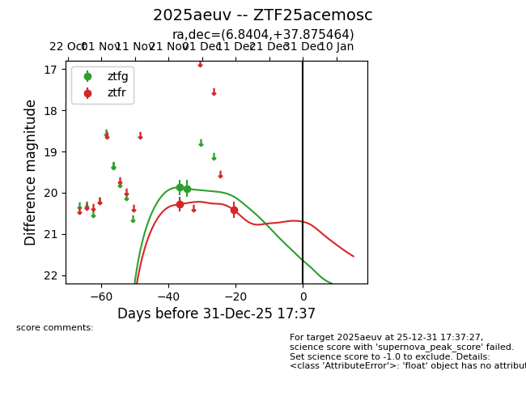
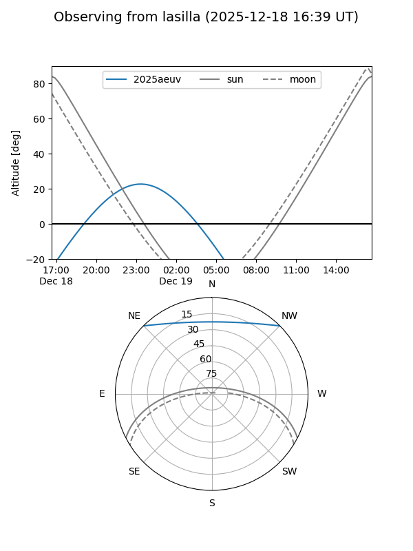
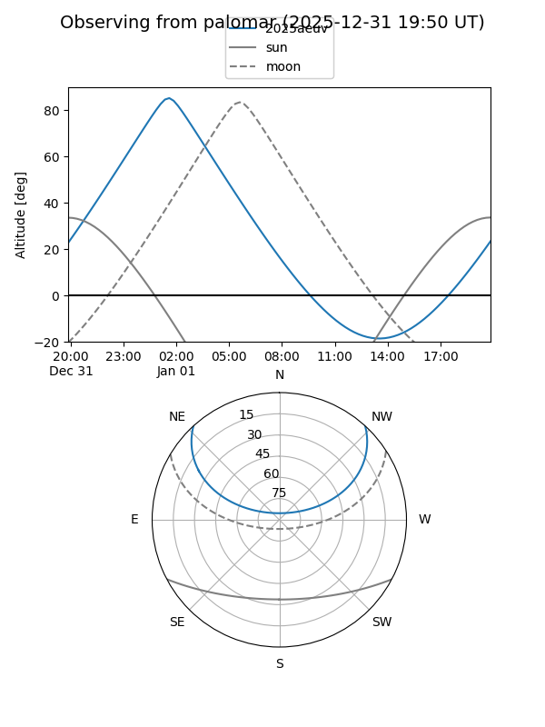
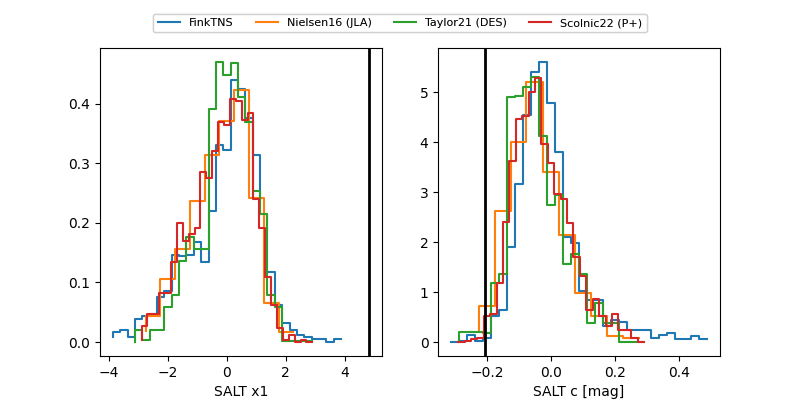

2025aeuv
Target 2025aeuv at 2025-12-18 11:17
Aliases and brokers:
FINK: fink-portal.org/ZTF25acemosc
Lasair: lasair-ztf.lsst.ac.uk/objects/ZTF25acemosc
ALeRCE: alerce.online/object/ZTF25acemosc
TNS: wis-tns.org/object/2025aeuv
YSE: ziggy.ucolick.org/yse/transient_detail/2025aeuv
alt names
ZTF25acemosc (ztf,fink_ztf)
2025aeuv (tns,yse)
Coordinates:
equatorial (ra, dec) = 6.8404,+37.87546
equatorial (HMS+DMS) = 00:27:21.70,+37:52:31.67
galactic (l, b) = (117.7025,-24.75169)
Photometry
last ztfg=19.90, ztfr=20.41
2 ztfg, 2 ztfr detections
Lightcurve

Visibility


Additional plots
